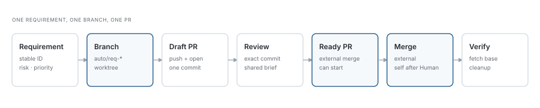
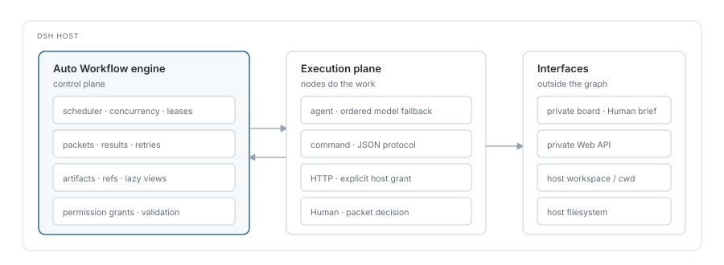

Persistent, concurrent node-graph workflows for DeepSeek Harness.
Model agents, shell commands, HTTP calls and Human decisions run in one durable graph.
New tasks arrive as independent packets; a Human wait on one task does not stop the others.
The built-in development example gives every requirement a branch, a worktree and its own PR.
A run stays mounted. Every task enters as an independent packet with its own input, output and history. Root and node concurrency are bounded, and Human decisions never block unrelated work.
02
Mix models, commands and people
Agent, command, HTTP, Human, fan-out/join, gate and subworkflow nodes share one scheduler. Model candidates fall back only when a provider or model call fails, with per-candidate reasoning effort.
03
Built for real development
The development example runs 3 engineers and 3 reviewers, keeps one branch/worktree per requirement, opens its own draft PR, and shows the Human a structured brief before any merge.
How a requirement moves
branch → PR → merge → cleanup

The workflow can wait for an external PR merge, or self-merge with a merge commit after Human approval.
Both paths verify the reviewed commit against the base branch before cleanup.
RequirementStable ID, explicit source, priority and risk are recorded.
Branch + worktreeOne retained auto/req-* branch checked out in its own worktree; one commit per snapshot.
Draft PRThe workflow pushes its branch and opens its own PR; external reviewers can see the diff early.
Review + briefA reviewer pins the exact commit; the same structured brief appears in the Human board and the PR body.
MergeExternal merge is allowed directly. After a grace period, Human approval can authorize the workflow to self-merge.
Verify + cleanupFetch the base, verify the merge commit, remove the worktree and local branch, keep artifacts and history.
One engine, explicit boundaries
DSH Host

The engine owns scheduling, leases, retries, permissions and references. Executors only do the work;
node config and graph definitions are validated before they can run.
What makes it different
small surface, strict contracts
Persistent, not one-shot. A run can stay idle or wait for Humans; new packets can arrive at any time. Stopping or reloading does not silently replay uncertain effects.
Packet isolation. Human A waiting does not stall Human B, another engineer or the producer. Node switches park only that node's queue.
Artifacts, not chat history. Large inputs and outputs become references; state snapshots stay small and lazy views fetch details only when needed.
Permissions are external to the graph. Command and HTTP access is granted by the user; a definition cannot widen its own grant.
No default task deadline. Long model tasks are not cut by an implicit timeout; a deadline is opt-in.
Human-first merge gate. The board shows requirement, changes, verification, review and risks before approve, revise or reject.
Get started
v1.0.1
Install the plugin, then open a workflow from a DSH session. The plugin includes the generic runtime; the development workflow is an example you can adapt.
Requires Node.js 22.5+ and DeepSeek Harness 0.2.1-rc.5+. For the PR example, authenticate gh or set GITHUB_TOKEN with Contents and Pull requests write access.